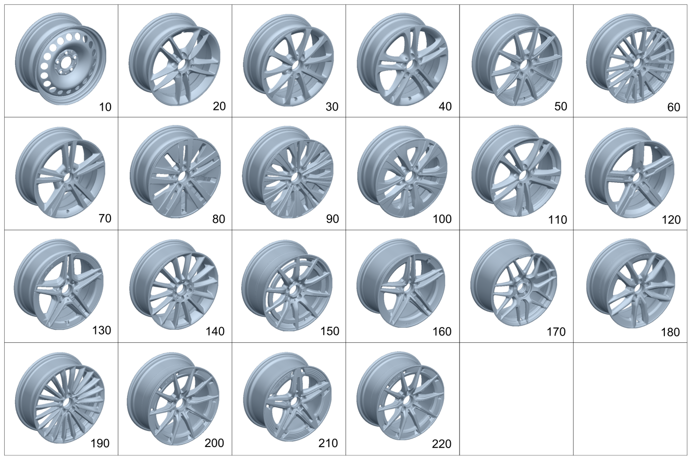

| № | Артикул | Название | Кол. | Примечание | Ограничение |
|---|---|---|---|---|---|
| 10 | A 247 400 01 00 | Дисковое колесо | 2 | Передний мост; 6,5J X 16 H2 ET 44 [002869] СОБЛЮДАТЬ РУКОВОДСТВО ПО ВЫПОЛНЕНИЮ РАБОТ В WIS-NET#GF40.10-P-0804B# | R00 |
| 10 | A 247 400 01 00 | Дисковое колесо | 2 | Задний мост; 6,5J X 16 H2 ET 44 [002869] СОБЛЮДАТЬ РУКОВОДСТВО ПО ВЫПОЛНЕНИЮ РАБОТ В WIS-NET#GF40.10-P-0804B# | R00 |
| 10 | A 247 400 03 00 | Дисковое колесо | 2 | Передний мост; 6,5J X 17 H2 ET 44 [002869] СОБЛЮДАТЬ РУКОВОДСТВО ПО ВЫПОЛНЕНИЮ РАБОТ В WIS-NET#GF40.10-P-0804B# | 643 |
| 10 | A 247 400 03 00 | Дисковое колесо | 2 | Задний мост; 6,5J X 17 H2 ET 44 [002869] СОБЛЮДАТЬ РУКОВОДСТВО ПО ВЫПОЛНЕНИЮ РАБОТ В WIS-NET#GF40.10-P-0804B# | 643 |
| 20 | A 177 401 01 00 | Дисковое колесо | 2 | Передний мост; 6,5J X 16 H2 ET 44 [002869] СОБЛЮДАТЬ РУКОВОДСТВО ПО ВЫПОЛНЕНИЮ РАБОТ В WIS-NET#GF40.10-P-0804B# | R78 |
| 20 | A 177 401 01 00 | Дисковое колесо | 2 | Задний мост; 6,5J X 16 H2 ET 44 [002869] СОБЛЮДАТЬ РУКОВОДСТВО ПО ВЫПОЛНЕНИЮ РАБОТ В WIS-NET#GF40.10-P-0804B# | R78 |
| 20 | A 177 401 01 00 | Дисковое колесо | 4 | Передний и задний мост; 6,5J X 16 H2 ET 44 [002869] СОБЛЮДАТЬ РУКОВОДСТВО ПО ВЫПОЛНЕНИЮ РАБОТ В WIS-NET#GF40.10-P-0804B# | 3R1 |
| 30 | A 177 401 03 00 | Дисковое колесо | 2 | Передний мост; 6,5J X 17 H2 ET 44 [002869] СОБЛЮДАТЬ РУКОВОДСТВО ПО ВЫПОЛНЕНИЮ РАБОТ В WIS-NET#GF40.10-P-0804B# | 72R |
| 30 | A 177 401 03 00 | Дисковое колесо | 2 | Задний мост; 6,5J X 17 H2 ET 44 [002869] СОБЛЮДАТЬ РУКОВОДСТВО ПО ВЫПОЛНЕНИЮ РАБОТ В WIS-NET#GF40.10-P-0804B# | 72R |
| 30 | A 177 401 03 00 | Дисковое колесо | 4 | Передний и задний мост; 6,5J X 17 H2 ET 44 [002869] СОБЛЮДАТЬ РУКОВОДСТВО ПО ВЫПОЛНЕНИЮ РАБОТ В WIS-NET#GF40.10-P-0804B# | 2R9 |
| 40 | A 177 401 04 00 | Дисковое колесо | 2 | Передний мост; 6,5J X 17 H2 ET 44 [002869] СОБЛЮДАТЬ РУКОВОДСТВО ПО ВЫПОЛНЕНИЮ РАБОТ В WIS-NET#GF40.10-P-0804B# | R62 |
| 40 | A 177 401 04 00 | Дисковое колесо | 2 | Передний мост; 6,5J X 17 H2 ET 44 [002869] СОБЛЮДАТЬ РУКОВОДСТВО ПО ВЫПОЛНЕНИЮ РАБОТ В WIS-NET#GF40.10-P-0804B# | 76R |
| 40 | A 177 401 04 00 | Дисковое колесо | 2 | Задний мост; 6,5J X 17 H2 ET 44 [002869] СОБЛЮДАТЬ РУКОВОДСТВО ПО ВЫПОЛНЕНИЮ РАБОТ В WIS-NET#GF40.10-P-0804B# | R62 |
| 40 | A 177 401 04 00 | Дисковое колесо | 2 | Задний мост; 6,5J X 17 H2 ET 44 [002869] СОБЛЮДАТЬ РУКОВОДСТВО ПО ВЫПОЛНЕНИЮ РАБОТ В WIS-NET#GF40.10-P-0804B# | 76R |
| 50 | A 177 401 30 00 | Дисковое колесо | 2 | Передний мост; 6,5J X 17 H2 ET 44 [002869] СОБЛЮДАТЬ РУКОВОДСТВО ПО ВЫПОЛНЕНИЮ РАБОТ В WIS-NET#GF40.10-P-0804B# | R43 |
| 50 | A 177 401 30 00 | Дисковое колесо | 2 | Задний мост; 6,5J X 17 H2 ET 44 [002869] СОБЛЮДАТЬ РУКОВОДСТВО ПО ВЫПОЛНЕНИЮ РАБОТ В WIS-NET#GF40.10-P-0804B# | R43 |
| 50 | A 177 401 11 00 | Дисковое колесо | 2 | Передний мост; 6,5J X 16 H2 ET 44 [002869] СОБЛЮДАТЬ РУКОВОДСТВО ПО ВЫПОЛНЕНИЮ РАБОТ В WIS-NET#GF40.10-P-0804B# | R89 |
| 50 | A 177 401 11 00 | Дисковое колесо | 2 | Задний мост; 6,5J X 16 H2 ET 44 [002869] СОБЛЮДАТЬ РУКОВОДСТВО ПО ВЫПОЛНЕНИЮ РАБОТ В WIS-NET#GF40.10-P-0804B# | R89 |
| 50 | A 177 401 11 00 | Дисковое колесо | 4 | Передний и задний мост; 6,5J X 16 H2 ET 44 [-] Ознакомиться с инструкцией по выполнению работ в WIS-NET#GF40.10-P-0804B# | 3R7 |
| 60 | A 177 401 06 00 | Дисковое колесо | 2 | Передний мост; 7,5J X 18 H2 ET 49 [002869] СОБЛЮДАТЬ РУКОВОДСТВО ПО ВЫПОЛНЕНИЮ РАБОТ В WIS-NET#GF40.10-P-0804B# | 04R |
| 60 | A 177 401 06 00 | Дисковое колесо | 2 | Задний мост; 7,5J X 18 H2 ET 49 [002869] СОБЛЮДАТЬ РУКОВОДСТВО ПО ВЫПОЛНЕНИЮ РАБОТ В WIS-NET#GF40.10-P-0804B# | 04R |
| 60 | A 177 401 06 00 | Дисковое колесо | 4 | Передний и задний мост; 7,5J X 18 H2 ET 49 [002869] СОБЛЮДАТЬ РУКОВОДСТВО ПО ВЫПОЛНЕНИЮ РАБОТ В WIS-NET#GF40.10-P-0804B# | 5R4 |
| 70 | A 177 401 08 00 | Дисковое колесо | 2 | Передний мост; 7,5J X 19 H2 ET 49 [002869] СОБЛЮДАТЬ РУКОВОДСТВО ПО ВЫПОЛНЕНИЮ РАБОТ В WIS-NET#GF40.10-P-0804B# | R55 |
| 70 | A 177 401 08 00 | Дисковое колесо | 2 | Передний мост; 7,5J X 19 H2 ET 49 [002869] СОБЛЮДАТЬ РУКОВОДСТВО ПО ВЫПОЛНЕНИЮ РАБОТ В WIS-NET#GF40.10-P-0804B# | R55/77R |
| 70 | A 177 401 08 00 | Дисковое колесо | 2 | Передний мост; 7,5J X 19 H2 ET 49 [002869] СОБЛЮДАТЬ РУКОВОДСТВО ПО ВЫПОЛНЕНИЮ РАБОТ В WIS-NET#GF40.10-P-0804B# | 77R |
| 70 | A 177 401 08 00 | Дисковое колесо | 2 | Задний мост; 7,5J X 19 H2 ET 49 [002869] СОБЛЮДАТЬ РУКОВОДСТВО ПО ВЫПОЛНЕНИЮ РАБОТ В WIS-NET#GF40.10-P-0804B# | R55 |
| 70 | A 177 401 08 00 | Дисковое колесо | 2 | Задний мост; 7,5J X 19 H2 ET 49 [002869] СОБЛЮДАТЬ РУКОВОДСТВО ПО ВЫПОЛНЕНИЮ РАБОТ В WIS-NET#GF40.10-P-0804B# | R55/77R |
| 70 | A 177 401 08 00 | Дисковое колесо | 2 | Задний мост; 7,5J X 19 H2 ET 49 [002869] СОБЛЮДАТЬ РУКОВОДСТВО ПО ВЫПОЛНЕНИЮ РАБОТ В WIS-NET#GF40.10-P-0804B# | 77R |
| 80 | A 177 401 02 00 | Дисковое колесо | 2 | Передний мост; 6,5J X 17 H2 ET 44 [-] Ознакомиться с инструкцией по выполнению работ в WIS-NET#GF40.10-P-0804B# | R11 |
| 80 | A 177 401 02 00 | Дисковое колесо | 2 | Задний мост; 6,5J X 17 H2 ET 44 [-] Ознакомиться с инструкцией по выполнению работ в WIS-NET#GF40.10-P-0804B# | R11 |
| 90 | A 177 401 33 00 | Дисковое колесо | 2 | Передний мост; 7,5J X 18 H2 ET 49 [002869] СОБЛЮДАТЬ РУКОВОДСТВО ПО ВЫПОЛНЕНИЮ РАБОТ В WIS-NET#GF40.10-P-0804B# | 61R |
| 90 | A 177 401 33 00 | Дисковое колесо | 2 | Задний мост; 7,5J X 18 H2 ET 49 [002869] СОБЛЮДАТЬ РУКОВОДСТВО ПО ВЫПОЛНЕНИЮ РАБОТ В WIS-NET#GF40.10-P-0804B# | 61R |
| 100 | A 177 401 29 00 | Дисковое колесо | 2 | Передний мост; 6,5JX17H2 ET 44 [-] Ознакомиться с инструкцией по выполнению работ в WIS-NET#GF40.10-P-0804B# | 25R |
| 100 | A 177 401 31 00 | Дисковое колесо | 2 | Передний мост; 7,5JX18H2 ET49 [-] Ознакомиться с инструкцией по выполнению работ в WIS-NET#GF40.10-P-0804B# | 51R |
| 100 | A 177 401 29 00 | Дисковое колесо | 2 | Задний мост; 6,5JX17H2 ET 44 [-] Ознакомиться с инструкцией по выполнению работ в WIS-NET#GF40.10-P-0804B# | 25R |
| 100 | A 177 401 31 00 | Дисковое колесо | 2 | Задний мост; 7,5JX18H2 ET49 [-] Ознакомиться с инструкцией по выполнению работ в WIS-NET#GF40.10-P-0804B# | 51R |
| 110 | A 177 401 28 00 | Дисковое колесо | 4 | Передний и задний мост; 6,5JX17H2 ET44 [-] Ознакомиться с инструкцией по выполнению работ в WIS-NET#GF40.10-P-0804B# | 4R9 |
| 110 | A 177 401 04 00 | Дисковое колесо | 4 | Передний и задний мост; 6,5J X 17 H2 ET 44 [-] Ознакомиться с инструкцией по выполнению работ в WIS-NET#GF40.10-P-0804B# | 4R9 |
| 120 | A 177 401 32 00 | Дисковое колесо | 2 | Передний мост; 7,5J X 18 H2 ET 49 [002869] СОБЛЮДАТЬ РУКОВОДСТВО ПО ВЫПОЛНЕНИЮ РАБОТ В WIS-NET#GF40.10-P-0804B# | R96/R67 |
| 120 | A 177 401 32 00 | Дисковое колесо | 2 | Передний мост; 7,5J X 18 H2 ET 49 [002869] СОБЛЮДАТЬ РУКОВОДСТВО ПО ВЫПОЛНЕНИЮ РАБОТ В WIS-NET#GF40.10-P-0804B# | R67 |
| 120 | A 177 401 32 00 | Дисковое колесо | 2 | Задний мост; 7,5J X 18 H2 ET 49 [002869] СОБЛЮДАТЬ РУКОВОДСТВО ПО ВЫПОЛНЕНИЮ РАБОТ В WIS-NET#GF40.10-P-0804B# [-] Ознакомиться с инструкцией по выполнению работ в WIS-NET#GF40.10-P-0804B# | R96/R67 |
| 120 | A 177 401 32 00 | Дисковое колесо | 2 | Задний мост; 7,5J X 18 H2 ET 49 [002869] СОБЛЮДАТЬ РУКОВОДСТВО ПО ВЫПОЛНЕНИЮ РАБОТ В WIS-NET#GF40.10-P-0804B# [-] Ознакомиться с инструкцией по выполнению работ в WIS-NET#GF40.10-P-0804B# | R67 |
| 130 | A 177 401 15 00 | Колесо со спицами | 2 | Передний мост; 7,5J X 18 H2 ET 49 [002869] СОБЛЮДАТЬ РУКОВОДСТВО ПО ВЫПОЛНЕНИЮ РАБОТ В WIS-NET#GF40.10-P-0804B# | RQS/RQT+-M016 |
| 130 | A 177 401 15 00 | Колесо со спицами | 2 | Задний мост; 7,5J X 18 H2 ET 49 [002869] СОБЛЮДАТЬ РУКОВОДСТВО ПО ВЫПОЛНЕНИЮ РАБОТ В WIS-NET#GF40.10-P-0804B# | RQS/RQT+-M016 |
| 130 | A 177 401 15 00 | Колесо со спицами | 4 | Передний и задний мост; 7,5J X 18 H2 ET 49 [002869] СОБЛЮДАТЬ РУКОВОДСТВО ПО ВЫПОЛНЕНИЮ РАБОТ В WIS-NET#GF40.10-P-0804B# | 8R5 |
| 130 | A 118 401 02 00 | Колесо со спицами | 4 | Передний и задний мост; 8J X 18 H2 ET 49 [002869] СОБЛЮДАТЬ РУКОВОДСТВО ПО ВЫПОЛНЕНИЮ РАБОТ В WIS-NET#GF40.10-P-0804B# | 8R1 |
| 140 | A 177 401 16 00 | Колесо со спицами | 2 | Передний мост; 7,5J X 19 H2 ET 49 [002869] СОБЛЮДАТЬ РУКОВОДСТВО ПО ВЫПОЛНЕНИЮ РАБОТ В WIS-NET#GF40.10-P-0804B# | RVG/RVK/RUG |
| 140 | A 177 401 16 00 | Колесо со спицами | 2 | Передний мост; 7,5J X 19 H2 ET 49 [002869] СОБЛЮДАТЬ РУКОВОДСТВО ПО ВЫПОЛНЕНИЮ РАБОТ В WIS-NET#GF40.10-P-0804B# | RVG/RVK |
| 140 | A 177 401 16 00 | Колесо со спицами | 2 | Передний мост; 7,5J X 19 H2 ET 49 [002869] СОБЛЮДАТЬ РУКОВОДСТВО ПО ВЫПОЛНЕНИЮ РАБОТ В WIS-NET#GF40.10-P-0804B# | RVI |
| 140 | A 177 401 16 00 | Колесо со спицами | 2 | Задний мост; 7,5J X 19 H2 ET 49 [002869] СОБЛЮДАТЬ РУКОВОДСТВО ПО ВЫПОЛНЕНИЮ РАБОТ В WIS-NET#GF40.10-P-0804B# | RVG/RVK/RUG |
| 140 | A 177 401 16 00 | Колесо со спицами | 2 | Задний мост; 7,5J X 19 H2 ET 49 [002869] СОБЛЮДАТЬ РУКОВОДСТВО ПО ВЫПОЛНЕНИЮ РАБОТ В WIS-NET#GF40.10-P-0804B# | RVG/RVK |
| 140 | A 177 401 16 00 | Колесо со спицами | 2 | Задний мост; 7,5J X 19 H2 ET 49 [002869] СОБЛЮДАТЬ РУКОВОДСТВО ПО ВЫПОЛНЕНИЮ РАБОТ В WIS-NET#GF40.10-P-0804B# | RVI |
| 140 | A 177 401 16 00 | Колесо со спицами | 4 | Передний и задний мост; 7,5J X 19 H2 ET 49 [002869] СОБЛЮДАТЬ РУКОВОДСТВО ПО ВЫПОЛНЕНИЮ РАБОТ В WIS-NET#GF40.10-P-0804B# | 8R2 |
| 140 | A 118 401 03 00 | Колесо со спицами | 2 | Передний мост; 8,5J X 19 H2 ET 55,2 [402] БОЛЬШЕ НЕ ПОСТАВЛЯЕТСЯ [-] Ознакомиться с инструкцией по выполнению работ в WIS-NET#GF40.10-P-0804B# | RRH |
| 140 | A 118 401 03 00 | Колесо со спицами | 2 | Задний мост; 8,5J X 19 H2 ET 55,2 [402] БОЛЬШЕ НЕ ПОСТАВЛЯЕТСЯ [-] Ознакомиться с инструкцией по выполнению работ в WIS-NET#GF40.10-P-0804B# | RRH |
| 150 | A 177 401 21 00 | Колесо со спицами | 2 | Передний мост; 8,5J X 18 H2 ET 46 [002869] СОБЛЮДАТЬ РУКОВОДСТВО ПО ВЫПОЛНЕНИЮ РАБОТ В WIS-NET#GF40.10-P-0804B# | RUS/RUX |
| 150 | A 177 401 21 00 | Колесо со спицами | 2 | Передний мост; 8,5J X 18 H2 ET 46 [002869] СОБЛЮДАТЬ РУКОВОДСТВО ПО ВЫПОЛНЕНИЮ РАБОТ В WIS-NET#GF40.10-P-0804B# | RUX |
| 150 | A 177 401 21 00 | Колесо со спицами | 2 | Задний мост; 8,5J X 18 H2 ET 46 [002869] СОБЛЮДАТЬ РУКОВОДСТВО ПО ВЫПОЛНЕНИЮ РАБОТ В WIS-NET#GF40.10-P-0804B# | RUS/RUX |
| 150 | A 177 401 21 00 | Колесо со спицами | 2 | Задний мост; 8,5J X 18 H2 ET 46 [002869] СОБЛЮДАТЬ РУКОВОДСТВО ПО ВЫПОЛНЕНИЮ РАБОТ В WIS-NET#GF40.10-P-0804B# | RUX |
| 150 | A 177 401 21 00 | Колесо со спицами | 4 | Передний и задний мост; 8,5J X 18 H2 ET 46 [002869] СОБЛЮДАТЬ РУКОВОДСТВО ПО ВЫПОЛНЕНИЮ РАБОТ В WIS-NET#GF40.10-P-0804B# | 8R7/9R6 |
| 150 | A 177 401 21 00 | Колесо со спицами | 4 | Передний и задний мост; 8,5J X 18 H2 ET 46 [002869] СОБЛЮДАТЬ РУКОВОДСТВО ПО ВЫПОЛНЕНИЮ РАБОТ В WIS-NET#GF40.10-P-0804B# | 9R6 |
| 160 | A 177 401 22 00 | Колесо со спицами | 2 | Передний мост; 9J X 19 H2 ET 52 [002869] СОБЛЮДАТЬ РУКОВОДСТВО ПО ВЫПОЛНЕНИЮ РАБОТ В WIS-NET#GF40.10-P-0804B# | RTG/RSX |
| 160 | A 177 401 22 00 | Колесо со спицами | 2 | Задний мост; 9J X 19 H2 ET 52 [002869] СОБЛЮДАТЬ РУКОВОДСТВО ПО ВЫПОЛНЕНИЮ РАБОТ В WIS-NET#GF40.10-P-0804B# | RTG/RSX |
| 170 | A 177 401 24 00 | Колесо со спицами | 2 | Передний мост; 9J X 19 H2 ET 52 [002869] СОБЛЮДАТЬ РУКОВОДСТВО ПО ВЫПОЛНЕНИЮ РАБОТ В WIS-NET#GF40.10-P-0804B# | RSY/RSZ |
| 170 | A 177 401 24 00 | Колесо со спицами | 2 | Передний мост; 9J X 19 H2 ET 52 [002869] СОБЛЮДАТЬ РУКОВОДСТВО ПО ВЫПОЛНЕНИЮ РАБОТ В WIS-NET#GF40.10-P-0804B# | RSZ |
| 170 | A 177 401 24 00 | Колесо со спицами | 2 | Передний мост; 9J X 19 H2 ET 52 [-] Ознакомиться с инструкцией по выполнению работ в WIS-NET#GF40.10-P-0804B# | RTH |
| 170 | A 177 401 24 00 | Колесо со спицами | 2 | Задний мост; 9J X 19 H2 ET 52 [002869] СОБЛЮДАТЬ РУКОВОДСТВО ПО ВЫПОЛНЕНИЮ РАБОТ В WIS-NET#GF40.10-P-0804B# | RSY/RSZ |
| 170 | A 177 401 24 00 | Колесо со спицами | 2 | Задний мост; 9J X 19 H2 ET 52 [002869] СОБЛЮДАТЬ РУКОВОДСТВО ПО ВЫПОЛНЕНИЮ РАБОТ В WIS-NET#GF40.10-P-0804B# | RSZ |
| 170 | A 177 401 24 00 | Колесо со спицами | 2 | Задний мост; 9J X 19 H2 ET 52 [-] Ознакомиться с инструкцией по выполнению работ в WIS-NET#GF40.10-P-0804B# | RTH |
| 180 | A 118 401 04 00 | Колесо со спицами | 2 | Передний мост; 8,5J X 19 H2 ET 55.2 [002869] СОБЛЮДАТЬ РУКОВОДСТВО ПО ВЫПОЛНЕНИЮ РАБОТ В WIS-NET#GF40.10-P-0804B# | RTI |
| 180 | A 177 401 17 00 | Колесо со спицами | 2 | Передний мост; 7,5 J X19 H2 ET 49 [002869] СОБЛЮДАТЬ РУКОВОДСТВО ПО ВЫПОЛНЕНИЮ РАБОТ В WIS-NET#GF40.10-P-0804B# | RZD |
| 180 | A 118 401 04 00 | Колесо со спицами | 2 | Задний мост; 8,5J X 19 H2 ET 55.2 [002869] СОБЛЮДАТЬ РУКОВОДСТВО ПО ВЫПОЛНЕНИЮ РАБОТ В WIS-NET#GF40.10-P-0804B# | RTI |
| 180 | A 177 401 17 00 | Колесо со спицами | 2 | Задний мост; 7,5 J X19 H2 ET 49 [002869] СОБЛЮДАТЬ РУКОВОДСТВО ПО ВЫПОЛНЕНИЮ РАБОТ В WIS-NET#GF40.10-P-0804B# | RZD |
| 190 | A 177 401 42 00 | Колесо со спицами | 2 | Передний мост; 7,5J X 19 H2 ET 49 [002869] СОБЛЮДАТЬ РУКОВОДСТВО ПО ВЫПОЛНЕНИЮ РАБОТ В WIS-NET#GF40.10-P-0804B# | RVZ/RUH |
| 190 | A 177 401 42 00 | Колесо со спицами | 2 | Задний мост; 7,5J X 19 H2 ET 49 [002869] СОБЛЮДАТЬ РУКОВОДСТВО ПО ВЫПОЛНЕНИЮ РАБОТ В WIS-NET#GF40.10-P-0804B# | RVZ/RUH |
| 200 | A 118 401 05 00 | Колесо со спицами | 2 | Передний мост; 8J X18 H2 ET 49 [002869] СОБЛЮДАТЬ РУКОВОДСТВО ПО ВЫПОЛНЕНИЮ РАБОТ В WIS-NET#GF40.10-P-0804B# | RQQ |
| 200 | A 118 401 05 00 | Колесо со спицами | 2 | Задний мост; 8J X18 H2 ET 49 [002869] СОБЛЮДАТЬ РУКОВОДСТВО ПО ВЫПОЛНЕНИЮ РАБОТ В WIS-NET#GF40.10-P-0804B# | RQQ |
| 220 | A 118 401 05 00 | Колесо со спицами | 4 | Передний и задний мост; 8J X18 H2 ET 49 [002869] СОБЛЮДАТЬ РУКОВОДСТВО ПО ВЫПОЛНЕНИЮ РАБОТ В WIS-NET#GF40.10-P-0804B# | 9R0 |
| 400 | A 177 400 00 00 | Колесо | 1 | Аварийное запасное колесо; RAD 3,5BX19H2 | 690+809 |
| 400 | A 177 400 02 00 | Колесо | 1 | Аварийное запасное колесо; RAD 3,5BX19H2 | 690+-809 |
| 400 | A 177 400 02 00 | Колесо | 1 | Аварийное запасное колесо; RAD 3,5BX19H2 | 672 |
| 410 | A 177 400 01 00 | - Дисковое колесо | 1 | Для аварийного запасного колеса; 3,5B X 19H2 ET 0 | 672 |
| 420 | A 000 401 21 24 | - Шина | 1 | Для аварийного запасного колеса | 672 |
| 500 | A 222 400 30 00 | Колпак колеса | 1 | Комплект деталей | 652+(R00/643) |
| 505 | A 222 400 22 00 | - Колпак ступицы | 4 | Передний и задний мост | 652+(R00/643) |
| 510 | A 247 400 06 00 | Колпак колеса | 2 | Слева | R00 |
| 510 | A 247 400 07 00 | Колпак колеса | 2 | Справа | 643 |
| 510 | A 247 400 06 00 | Колпак колеса | 2 | Справа | R00 |
| 510 | A 247 400 06 00 | Колпак колеса | 4 | Передний и задний мост | R00+651 |
| 510 | A 247 400 07 00 | Колпак колеса | 2 | Слева | 643 |
| 510 | A 247 400 07 00 | Колпак колеса | 4 | Передний и задний мост | 643+651 |
| 520 | A 222 400 22 00 | Колпак ступицы | 2 | Слева | |
| 520 | A 222 400 22 00 | Колпак ступицы | 2 | Слева | 651+(R00/643) |
| 520 | A 222 400 22 00 | Колпак ступицы | 2 | Слева | RQS/RQT/RVG/RVK |
| 520 | A 222 400 22 00 | Колпак ступицы | 2 | Слева | RQS/RQT |
| 520 | A 000 400 09 00 | Колпак колеса | 4 | Передний и задний мост | (RUG/RVK/RQT)+P37 |
| 520 | A 222 400 22 00 | Колпак ступицы | 2 | Справа | |
| 520 | A 222 400 22 00 | Колпак ступицы | 2 | Справа | 651+(R00/643) |
| 520 | A 222 400 22 00 | Колпак ступицы | 2 | Справа | RQS/RQT/RVG/RVK |
| 520 | A 222 400 22 00 | Колпак ступицы | 2 | Справа | RQS/RQT |
| 520 | A 000 400 57 00 | Колпак колеса | 2 | Слева | RSZ+P66 |
| 520 | A 000 400 27 00 | Колпак колеса | 2 | Слева | RTG/RRG/RTJ/RRH/RUX |
| 520 | A 000 400 27 00 | Колпак колеса | 2 | Слева | RTG/RRG/RTJ/RUX |
| 520 | A 000 400 27 00 | Колпак колеса | 2 | Слева | RRG/RTJ/RUX |
| 520 | A 000 400 57 00 | Колпак колеса | 2 | Справа | RSZ+P66 |
| 520 | A 000 400 27 00 | Колпак колеса | 2 | Справа | RTG/RRG/RTJ/RRH/RUX |
| 520 | A 000 400 27 00 | Колпак колеса | 2 | Справа | RTG/RRG/RTJ/RUX |
| 520 | A 000 400 27 00 | Колпак колеса | 2 | Справа | RRG/RTJ/RUX |
| 520 | A 220 400 01 25 | Крышка ступицы колеса | 2 | Слева | 651+(8R1/8R7/9R0) |
| 520 | A 220 400 01 25 | Крышка ступицы колеса | 2 | Слева | 651+9R0 |
| 520 | A 000 400 27 00 | Колпак колеса | 2 | Слева | 651+9R6 |
| 520 | A 220 400 01 25 | Крышка ступицы колеса | 2 | Справа | 651+(8R1/8R7/9R0) |
| 520 | A 220 400 01 25 | Крышка ступицы колеса | 2 | Справа | 651+9R0 |
| 520 | A 000 400 27 00 | Колпак колеса | 2 | Справа | 651+9R6 |
| 530 | A 000 990 83 07 | Винт со сфер. буртиком | 20 | Передний и задний мост; M14X1,5X30,7 | |
| 530 | A 000 990 17 07 | Винт со сфер. буртиком | 20 | Передний и задний мост; M14X1,5X30,7 | |
| 535 | A 000 400 22 00 | Колпак колеса | 1 | Комплект деталей | 651+(8R7/9R6)+RSZ |
| 535 | A 000 400 22 00 | Колпак колеса | 1 | Комплект деталей | 651+9R6+RSZ |
| 535 | A 000 400 58 00 | Колпак колеса | 1 | Комплект деталей | 651+9R6+RSZ+P66 |
| 535 | A 000 400 22 00 | Колпак колеса | 1 | Комплект деталей | 651+8R7+RSZ |
| 540 | A 000 400 11 00 | Колпак колеса | 4 | Передний и задний мост | RSY |
| 540 | A 000 400 57 00 | Колпак колеса | 2 | Слева | RSZ+P66 |
| 540 | A 000 400 11 00 | Колпак колеса | 2 | Слева | RSZ |
| 540 | A 000 400 57 00 | Колпак колеса | 2 | Слева | RTH |
| 540 | A 000 400 57 00 | Колпак колеса | 2 | Справа | RSZ+P66 |
| 540 | A 000 400 11 00 | Колпак колеса | 2 | Справа | RSZ |
| 540 | A 000 400 57 00 | Колпак колеса | 2 | Справа | RTH |
| 550 | A 000 905 41 04 | Датчик давл. воздуха шины | 2 | Система контроля давления в шинах, передний мост | 475 |
| 550 | A 000 905 88 21 | Датчик давл. воздуха шины | 2 | Система контроля давления в шинах, передний мост; 433MHZ | 475 |
| 550 | A 000 905 41 04 | Датчик давл. воздуха шины | 2 | Система контроля давления в шинах, задний мост | 475 |
| 550 | A 000 905 88 21 | Датчик давл. воздуха шины | 2 | Система контроля давления в шинах, задний мост; 433MHZ | 475 |
| 550 | A 000 905 42 04 | Датчик давл. воздуха шины | 2 | Система контроля давления в шинах, передний мост | 475+498 |
| 550 | A 000 905 89 21 | Датчик давл. воздуха шины | 2 | Система контроля давления в шинах, передний мост; 315MHZ | 475+498 |
| 550 | A 000 905 42 04 | Датчик давл. воздуха шины | 2 | Система контроля давления в шинах, задний мост | 475+498 |
| 550 | A 000 905 89 21 | Датчик давл. воздуха шины | 2 | Система контроля давления в шинах, задний мост; 315MHZ | 475+498 |
| 550 | A 000 905 72 05 | Датчик давл. воздуха шины | 2 | Система контроля давления в шинах, передний мост | (R00/643)+475 |
| 550 | A 000 905 72 05 | Датчик давл. воздуха шины | 2 | Система контроля давления в шинах, задний мост | (R00/643)+475 |
| 550 | A 000 905 41 04 | Датчик давл. воздуха шины | 4 | Система контроля давления в шинах переднего моста и заднего моста | 475+(2R9/3R1/8R2/8R5) |
| 550 | A 000 905 41 04 | Датчик давл. воздуха шины | 4 | Система контроля давления в шинах переднего моста и заднего моста | 475+(651/652) |
| 550 | A 000 905 88 21 | Датчик давл. воздуха шины | 4 | Система контроля давления в шинах переднего моста и заднего моста; 433MHZ | 475+(651/652) |
| 560 | A 000 400 02 13 | Вентиль шины | 2 | Передний мост | -475 |
| 560 | A 000 400 02 13 | Вентиль шины | 2 | Задний мост | -475 |
| 560 | A 000 400 03 13 | Вентиль шины | 2 | Передний мост | (R00/643)+-475 |
| 560 | A 000 400 03 13 | Вентиль шины | 2 | Задний мост | (R00/643)+-475 |
| 565 | A 000 992 50 00 | Зажимное кольцо | 1 | Передний мост | 475 |
| 565 | A 000 992 50 00 | Зажимное кольцо | 1 | Задний мост | 475 |
| 570 | A 000 401 85 19 | Колпачок вентиля | 1 | Передний мост | 475 |
| 570 | A 000 401 85 19 | Колпачок вентиля | 1 | Задний мост | 475 |
| 570 | A 000 401 86 19 | Колпачок вентиля | 1 | Передний мост | 475+498 |
| 570 | A 000 401 86 19 | Колпачок вентиля | 1 | Задний мост | 475+498 |
| 575 | A 000 400 41 00 | Вентиль шины | 1 | Передний мост | 475 |
| 575 | A 000 400 29 13 | - Вентиль шины | 1 | Для аварийного запасного колеса | 690 |
| 575 | A 000 400 29 13 | - Вентиль шины | 1 | Для аварийного запасного колеса | 690/672 |
| 575 | A 000 400 29 13 | - Вентиль шины | 1 | Для аварийного запасного колеса | 672 |
| 575 | A 000 400 41 00 | Вентиль шины | 1 | Задний мост | 475 |
| 575 | A 000 400 40 00 | Вентиль шины | 1 | Передний мост | 475+(R00/643) |
| 575 | A 000 400 40 00 | Вентиль шины | 1 | Задний мост | 475+(R00/643) |
| 580 | A 000 401 79 09 | Гайка вентиля | 2 | Датчик давления переднего моста | 475 |
| 580 | A 000 401 64 38 | Гайка вентиля | 2 | Датчик давления переднего моста | 475 |
| 580 | A 000 401 79 09 | Гайка вентиля | 2 | Датчик давления заднего моста | 475 |
| 580 | A 000 401 64 38 | Гайка вентиля | 2 | Датчик давления заднего моста | 475 |
| 580 | A 000 401 79 09 | Гайка вентиля | 4 | Датчик давления переднего моста и заднего моста | 475+(2R9/3R1/8R2/8R5) |
| 580 | A 000 401 79 09 | Гайка вентиля | 4 | Датчик давления переднего моста и заднего моста | 475+(651/652) |
| 580 | A 000 401 64 38 | Гайка вентиля | 4 | Датчик давления переднего моста и заднего моста | 475+(651/652) |
| 600 | A 171 401 01 94 | Балансировочный грузик | NB | Исполнение с клеевым соединением; 5 GRAMM | |
| 600 | A 171 401 02 94 | Балансировочный грузик | NB | Исполнение с клеевым соединением; 10 GRAMM | |
| 600 | A 171 401 03 94 | Балансировочный грузик | NB | Исполнение с клеевым соединением; 15 GRAMM | |
| 600 | A 171 401 04 94 | Балансировочный грузик | NB | Исполнение с клеевым соединением; 20 GRAMM | |
| 600 | A 171 401 05 94 | Балансировочный грузик | NB | Исполнение с клеевым соединением; 25 GRAMM | |
| 600 | A 171 401 06 94 | Балансировочный грузик | NB | Исполнение с клеевым соединением; 30 GRAMM | |
| 600 | A 171 401 07 94 | Балансировочный грузик | NB | Исполнение с клеевым соединением; 35 GRAMM | |
| 600 | A 171 401 08 94 | Балансировочный грузик | NB | Исполнение с клеевым соединением; 40 GRAMM | |
| 600 | A 171 401 09 94 | Балансировочный грузик | NB | Исполнение с клеевым соединением; 45 GRAMM | |
| 600 | A 171 401 10 94 | Балансировочный грузик | NB | Исполнение с клеевым соединением; 50 GRAMM | |
| 600 | A 171 401 11 94 | Балансировочный грузик | NB | Исполнение с клеевым соединением; 55 GRAMM | |
| 600 | A 171 401 12 94 | Балансировочный грузик | NB | Исполнение с клеевым соединением; 60 GRAMM | |
| 610 | A 126 401 08 28 | Удерживающая пружина | NB | Балансировочный грузик | R00/643 |
| 620 | A 171 401 27 94 | Балансировочный грузик | NB | Стальной колесный диск; 5 GRAMM | R00/643 |
| 620 | A 171 401 28 94 | Балансировочный грузик | NB | Стальной колесный диск; 10 GRAMM | R00/643 |
| 620 | A 171 401 29 94 | Балансировочный грузик | NB | Стальной колесный диск; 15 GRAMM | R00/643 |
| 620 | A 171 401 14 94 | Балансировочный грузик | NB | Стальной колесный диск; 20 GRAMM | R00/643 |
| 620 | A 171 401 15 94 | Балансировочный грузик | NB | Стальной колесный диск; 25 GRAMM | R00/643 |
| 620 | A 171 401 16 94 | Балансировочный грузик | NB | Стальной колесный диск; 30 GRAMM | R00/643 |
| 620 | A 171 401 17 94 | Балансировочный грузик | NB | Стальной колесный диск; 35 GRAMM | R00/643 |
| 620 | A 171 401 18 94 | Балансировочный грузик | NB | Стальной колесный диск; 40 GRAMM | R00/643 |
| 620 | A 171 401 19 94 | Балансировочный грузик | NB | Стальной колесный диск; 45 GRAMM | R00/643 |
| 620 | A 171 401 20 94 | Балансировочный грузик | NB | Стальной колесный диск; 50 GRAMM | R00/643 |
| 620 | A 171 401 21 94 | Балансировочный грузик | NB | Стальной колесный диск; 55 GRAMM | R00/643 |
| 620 | A 171 401 22 94 | Балансировочный грузик | NB | Стальной колесный диск; 60 GRAMM | R00/643 |
Позиций: 189 · подписано на схемах: 189 · колесо — плавный зум в курсор, перетаскивание — пан, двойной клик — зум, клик по артикулу — скопировать · наведите на строку или цифру на схеме — подсветка связки, клик — закрепить.